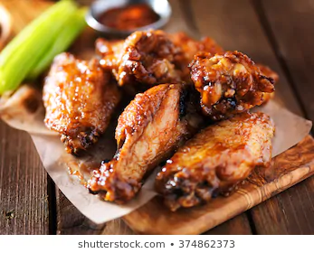
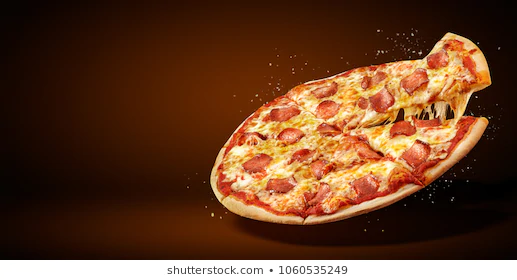
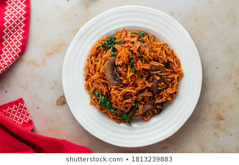

My Favorite Recipes
Chicken Wings

Chicken Wings are very delicious and easy to prepare if you pay attention.
These are the steps:
- Cut chicken into Wings
- Steam your chicken
Pizza

Pizza is a very popular food in the country and all over the world.
These are the steps:
- Get ..... ready.
- Do that ... one
- Enjoy.
Jollof

Jollof is a basiclly rice miixed with stew.
This is going to be my Favorite Recipe.
These are the steps:
- boil two cups of water.
- add salt to the water and taste it.
- add the rice.
BON APPETIE!!